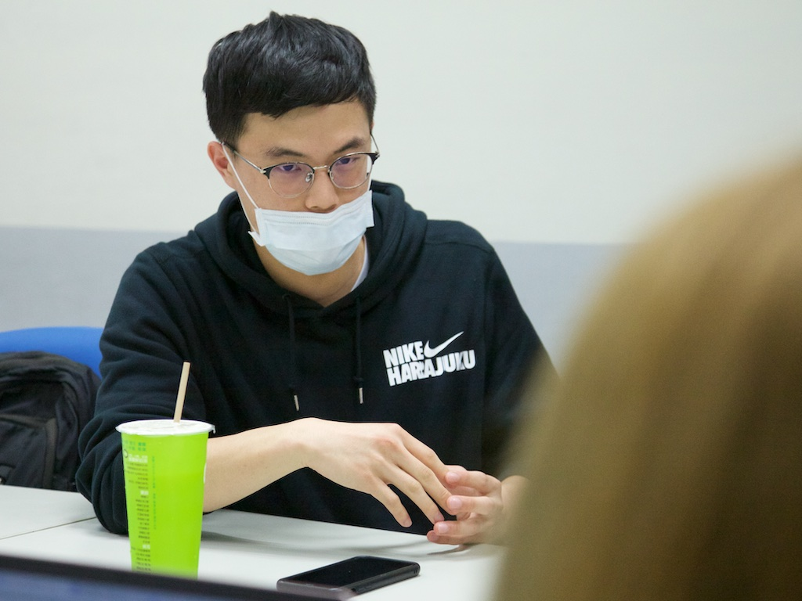

專題
墜落的無名英雄：社工的「證」確解答？
刊出日期：2020/04/10
【專題記者劉庭莉、黃婕、王品淇、白欣綜合報導】社會工作者是社會安全防護網的防線之一，往往需要面對許多社會案件、幫助弱勢族群。但超時工作、回捐陋習等，使得社工無法獲得應有的報酬。又因工作性質及刻板印象，間接影響社會大眾對於社工專業的重視程度。證照制度也因此產生，期待能藉此提升大眾對社工專業的認同，卻引起社福界對該制的異見。
社工服務對象大致分為五類，分別為兒少婦家、老人、醫療、司法矯治、身心障礙。以醫務社工為例，需負責醫療處置外的所有事務，包含醫療糾紛、協尋家屬、媒合經濟資源，以及提供病症痊癒後，回歸日常生活的協助等。不過社工職責內容層面廣泛，在實際工作時，多數情境仍仰賴社工自身的經驗與判斷力。
「社會工作者就是建立在人跟人之間的關係上，不是單純面對物品。」國立政治大學社會工作研究所學生劉庭瑄透露，社工更需要針對個案情況，採取相應的輔導模式。中國醫藥大學北港附設醫院社工師蘇于騰則分享，課本著重與個案互動的用字遣詞、展現同理心，但社工實際執行與書本知識不盡相同，「（社工）都是要做危機處理，要在最短時間獲得最多資料，去進行資源的分析跟評估。」
證照制度引歧見 社工憂無法反映專業
社工作為一門專業，除了要自身認同之外，也需獲得社會認同。「社會工作在邁向專業化的過程中，證照是一個必然。」對證照持正面看法的政大社工所所長宋麗玉認為，社會工作要成為專業須具備知識系統與社會認可，證照的存在是為確保社工相關的知識和基礎能力。證照考試雖可能無法保證通過者的實務能力，但宋麗玉說明，考試科目與各科範疇會適時更新，不應以此否定制度的必要性。國立臺灣大學社會工作學系學生王映婷也表認同，社會大眾至今對社工專業的認知不足，常會將社工與志工混淆，「所以我覺得有個證照將它（社會工作）變成專業的話，也讓社工能更被尊重。」且衛生福利部也在今年正式實施社工薪資新制，除調整起薪，另依年資、學歷、執照等調高報酬，讓擁有執照的社工師可獲得更高的薪資待遇。
於證照存在的必要性，仍有許多分歧的看法。雖目前社會福利服務是由政府與民間機構共同提供，各縣市政府的社會福利機構、醫院、學校等場域，需依法聘用一定比例的社工師，但民間機構並沒有強制規定，部分未持有證照的社工仍可執業。政大社工所學生黃貞皓指出，考到證照可能只是懂課本理論，「其他有些實務工作者考了十幾年都沒有考上，他們實力比我們還要好。」

國立政治大學社會工作研究所學生黃貞皓舉個案來說明，當遇到與現行法規衝突，社工無法另闢蹊徑，個案在社會中的弱勢地位恐無法改善。 圖／王品淇攝
「相較於國立大學，科大的學生很難考到證照。」高雄市社會工作人員職業工會秘書長郭志南質疑證照的取得與實務能力的相關性，他認為，因證照本身就是考試取向，擔憂證照制度恐無法充分反映出社工的專業。他以自身為例，闡述自己是少數科大畢業能考到證照的，周遭同校友人幾乎無法考過。另外，曾接受社福單位協助的政大社工所學生黃柔珊坦言，過去曾幫助自己的社工，並非全具有社工師頭銜，一樣擁有出色的能力。
此外，考過證照、欲以「社工師」名義就業前，還得先經過一段繁雜流程及付出大筆費用。社工師K（化名）說明，首先要報考「專門職業及技術人員高等考試社會工作師考試」，若通過考試，除要繳費取得合格證書與證照，還需加入地方社會工作師公會，方可向地方政府申請執照，擁有執照後才能以社工師身分工作。
然雖證照並無期限，但執照需要六年更換一次。因此社工師在申請完執業執照後，應持續學習以獲得教育積分，累積到一定學分才可順利換照。如未在六年內繼續修滿教育積分，將被認為不符合繼續執業的資格。
「（申請執照）手續太複雜，連弄懂都是一件很麻煩的事情。」K無奈地解釋，社工師執業是一件繁瑣的事，舉凡留職停薪、換地區工作、停業或復業都要向政府報備，「所以乾脆沒有開始就沒有後面的這些（瑣碎細節）。我一樣考上社工師，但我不要用社工師的身分工作，我就是社工員。」根據《社會工作師法》第6條，無社工師證照，不得以社工師名義執業，但若單純以社工員名義從業，既可在民間機構從事相同的工作內容，也不受困於繁複手續。這個狀況也可從衛福部對社會福利工作人員數的統計資料看出，民國108年社工師有1843人，社工員卻有6668人，是社工師的3.6倍之多（註）。
註：此統計資料為衛生福利部所屬及各直轄市、縣（市）政府轄內機關辦理社會福利各項業務之現職人員（包括「公設民營機構」及「接受政府委服務單位」人員數）。
社福界陋習不斷 社工權益保障待完善
不過在證照問題之前，社工仍有可能遇到民眾誤解、勞資爭議等不同問題。「親戚都會問我，到底是念社會系還是志工系？」王映婷說。社工與志工都是在人們需要幫助時，伸出援手的角色，台北市社會工作人員職業工會理事長沈曜逸表示，若是平常沒有接觸社工的人就較容易產生誤解。長期深耕社區、從事輔導兒童及婦女領域的沈曜逸道：「我們服務的對象幾乎沒有把我們講成志工，當你夠貼近他們的生活時，就不會叫錯。」然而，相同的情況並沒有發生在擔任醫務社工的K身上。同樣的白袍之下，K與醫師、護理師、營養師等，雖執掌業務各有不同，再加上醫院也有提供志工服務，病人很難區分差異，K透露，「最後他們通常只會以小姐來稱呼。」
台北市社會工作人員職業工會理事長沈曜逸分享，有時國家與社區社工看見的方向不同，在作法上也會有所差異。 圖／王品淇攝
相較於是志願服務的志工，社工是專業職業，並受《勞動基準法》保障，但因工作內容具服務性質，加上工作多屬責任制而超時上班。郭志南指出，自己曾見過社工打卡下班後，回辦公室繼續工作。甚至實習生也有工作超時的問題，原定兩個月320小時的工作時數，實際卻有做到近400小時的情況，又因擔心被誤認為能力不足，因而放棄申請加班補休的權利。
隨著目前大眾對於社會安全網的重視程度提升，更加要求社工積極介入個案，但社工人力不足仍是一大問題。社工在過勞的狀況下，依舊陷入分身乏術的窘境。K有些沮喪地提到，「出事時，大家都會說社工應該出來做些什麼、社工怎麼沒有預知事情的發生。」
除此之外，社福界存在著薪水回捐的陋習，在社工每月的薪水裡扣一部分，捐給發薪單位。沈曜逸指出，職業工會最常處理的就是勞資爭議。然勞資雙方間資訊落差，經常令勞方起疑金錢的流向。過往曾出現個案數量超出社會局負荷，轉向委託民間機構辦理，並給予資金補助。但機構卻高報社工薪水，與社工實拿薪資並不相符，甚至任意解雇社工，造成勞權受損的狀況。沈曜逸嘆道：「社工師證照與《社會工作師法》推行20年，社工一樣還是回捐、薪資還是很低。」